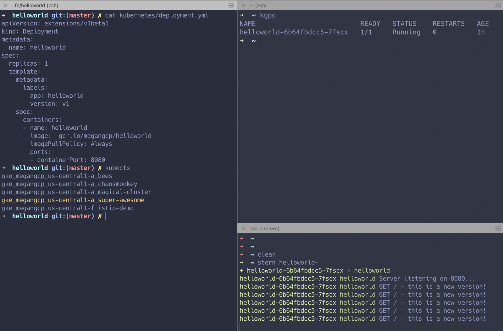

同时从多个 Pod 跟踪 K8S 日志的 Bash 脚本！
通常情况下，在部署了 K8S 服务之后，为了更好地监控服务的运行情况，都会接入对应的日志系统来进行检测和分析，比如常见的 Filebeat + ElasticSearch + Kibana 这一套组合来完成。虽然该组合可以满足我们对于服务监控的要求，但是如果只是部署一个内部单服务用的话，未免显得大材小用，而且部署服务还会带来大量的资源消耗。那么有没有简单查看 K8S 中多个 Pod 中的日志工具呢？咳咳咳，那么今天就介绍两款超好用的多容器实时日志查看工具 Kubetail 和 Stern。
1. Kubetail 工具
Bash script to tail Kubernetes logs from multiple pods at the same time
Kubetail 项目其实是一个简单 Shell 脚本，它可以将多个 Pod 中的日志信息聚合到一起进行展示，并支持彩色输出和条件过滤。

1.1 工具安装
安装非常简单，而且针对不同平台适配不同类型的工具。
- Homebrew
# install kubetail using brew
$ brew tap johanhaleby/kubetail && brew install kubetail
- Linux
# download and to go
# https://github.com/johanhaleby/kubetail/releases
$ wget https://raw.githubusercontent.com/johanhaleby/kubetail/master/kubetail
$ chmod +x kubetail
$ cp kubetail /usr/local/bin
- zsh plugin
# oh-my-zsh
$ cd ~/.oh-my-zsh/custom/plugins/
$ git clone https://github.com/johanhaleby/kubetail.git kubetail
$ vim ~/.zshrc
plugins=( ... kubetail )
$ source ~/.zshrc
1.2 工具使用
使用起来也非常的简单，短短 2 分钟就可以上手！
- 示例说明前数据信息准备
# show all your pods
$ kubectl get pods -n test
NAME READY STATUS RESTARTS AGE
app1-v1-aba8y 1/1 Running 0 1d
app1-v1-gc4st 1/1 Running 0 1d
app1-v1-m8acl 1/1 Running 0 6d
app1-v1-s20d0 1/1 Running 0 1d
app2-v31-9pbpn 1/1 Running 0 1d
app2-v31-q74wg 1/1 Running 0 1d
my-demo-v5-0fa8o 1/1 Running 0 3h
my-demo-v5-yhren 1/1 Running 0 2h
- 介绍了工具的使用方式
# 同时跟踪两个"app2"的Pod的日志
$ kubetail app2
$ kubetail app1,app2
# 指定"app2"的Pod里面的容器名称
$ kubetail app2 -c container1
$ kubetail app2 -c container1 -c container2
$ kubetail app2 -c container1 -n namespace1
# 使用正则表达式
$ kubetail "^app1|.*my-demo.*" --regex
- 通过使用
-k参数，您可以指定kubetail如何使用颜色
# pod: 只有Pod名称着色且其他输出均使用终端默认颜色
# line: 整行是彩色的(默认)
# false: 所有输出都不着色
$ kubetail app2 -k pod
$ kubetail app2 -k line
$ kubetail app2 -k false
- 常见命令行参数说明
| 编号 | 命令行参数 | 对应含义解析 |
|---|---|---|
| 1 | -n |
指定命名空间的名称 |
| 2 | -c |
指定多容器 Pod 中的容器具体名称 |
| 3 | -k |
将输出的日志内容进行着色显示 |
| 4 | -b |
是否使用 line-buffered 特性，默认为 false 状态 |
| 5 | -l |
标签过滤器，用于忽略 Pod 名称 |
| 6 | -t |
指定 Kubeconfig 文件中的 Context 内容 |
| 7 | -s |
指定返回一个相对时间之后的日志；例如 5s/2m/3h，默认是 10s |
2. Stern 工具
Multi pod and container log tailing for Kubernetes
Stern 是使用 Go 语言开发的一款开箱即用的简单工具，它可以将多个 Pod 中的日志信息聚合到一起进行展示，并支持彩色输出和条件过滤。需要说的是，改工具已经很久都没有更新过了，所有不建议使用了。

2.1 工具安装
安装非常简单，而且针对不同平台适配不同类型的工具。
- Homebrew
# install kubetail using brew
$ brew install stern
- Linux
# download and to go
# https://github.com/wercker/stern/tags
$ wget https://github.com/wercker/stern/releases/download/1.11.0/stern_linux_amd64
$ chmod +x stern_linux_amd64
$ mv stern_linux_amd64 /usr/local/bin
- zsh plugin
# bash-completion
$ brew install bash-completion
$ source <(brew --prefix)/etc/bash-completion
$ source <(stern --completion=bash)
# .zshrc
$ source <(stern --completion=zsh)
2.2 工具使用
使用起来也非常的简单，短短 2 分钟就可以上手！
- 示例说明前数据信息准备
# show all your pods
$ kubectl get pods -n test
NAME READY STATUS RESTARTS AGE
app1-v1-aba8y 1/1 Running 0 1d
app1-v1-gc4st 1/1 Running 0 1d
app1-v1-m8acl 1/1 Running 0 6d
app1-v1-s20d0 1/1 Running 0 1d
app2-v31-9pbpn 1/1 Running 0 1d
app2-v31-q74wg 1/1 Running 0 1d
my-demo-v5-0fa8o 1/1 Running 0 3h
my-demo-v5-yhren 1/1 Running 0 2h
- 介绍了工具的使用方式
# 查看默认名称空间下的所有Pod日志
$ stern .
# 查看 Pod 中指定容器的日志
$ stern app2 --container container1
# 查看指定命名空间中容器的日志
$ stern app2 --namespace namespace1
# 查看指定命名空间中除指定容器外的所有容器的日志
$ stern --namespace namespace1 --exclude-container container1 .
# 查看指定时间范围内容器的日志(15分钟内)
$ stern app2 -t --since 15m
# 查看所有命名空间中符合指定标签容器的日志
$ stern --all-namespaces -l run=nginx
# 查找前端Pod中版本为canary的日志
$ stern frontend --selector release=canary
# 将日志消息通过管道传输到jq命令
$ stern backend -o json | jq .
# 仅输出日志消息本身
$ stern backend -o raw
# 使用自定义模板输出
$ stern --template '{{.Message}} ({{.Namespace}}/{{.PodName}}/{{.ContainerName}})' backend
# 使用stern提供的颜色的自定义模板输出
$ stern --template '{{.Message}} ({{.Namespace}}/{{color .PodColor .PodName}}/{{color .ContainerColor .ContainerName}})' backend
- 常见命令行参数说明
| flag | default | purpose |
|---|---|---|
--container |
.* |
Container name when multiple containers in pod (regular expression) |
--exclude-container |
Container name to exclude when multiple containers in pod (regular expression) | |
--container-state |
running |
Tail containers with status in running, waiting or terminated. Default to running. |
--timestamps |
Print timestamps | |
--since |
Return logs newer than a relative duration like 52, 2m, or 3h. Displays all if omitted | |
--context |
Kubernetes context to use. Default to kubectl config current-context |
|
--exclude |
Log lines to exclude; specify multiple with additional --exclude; (regular expression) |
|
--namespace |
Kubernetes namespace to use. Default to namespace configured in Kubernetes context | |
--kubeconfig |
~/.kube/config |
Path to kubeconfig file to use |
--all-namespaces |
If present, tail across all namespaces. A specific namespace is ignored even if specified with –namespace. | |
--selector |
Selector (label query) to filter on. If present, default to .* for the pod-query. |
|
--tail |
-1 |
The number of lines from the end of the logs to show. Defaults to -1, showing all logs. |
--color |
auto |
Force set color output. auto: colorize if tty attached, always: always colorize, never: never colorize |
--output |
default |
Specify predefined template. Currently support: [default, raw, json] See templates section |
template |
Template to use for log lines, leave empty to use –output flag |
3. 参考链接地址
送人玫瑰，手有余香！